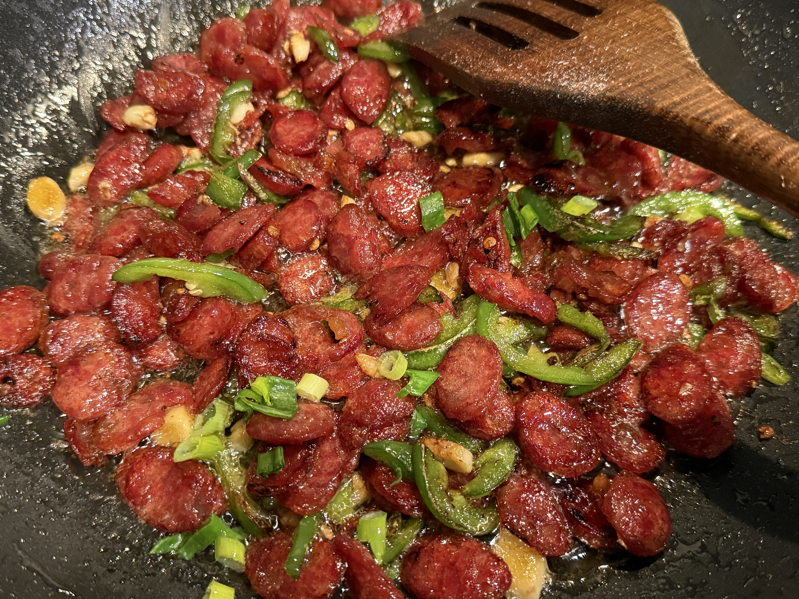
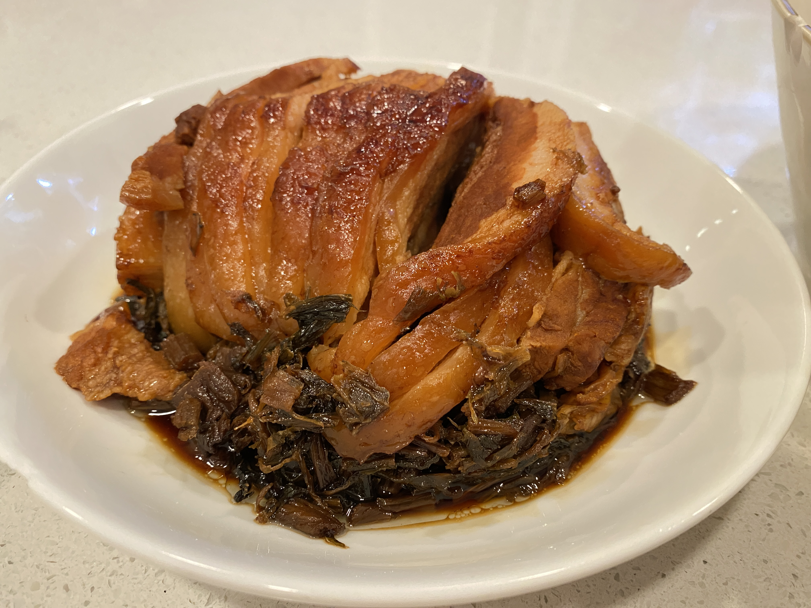
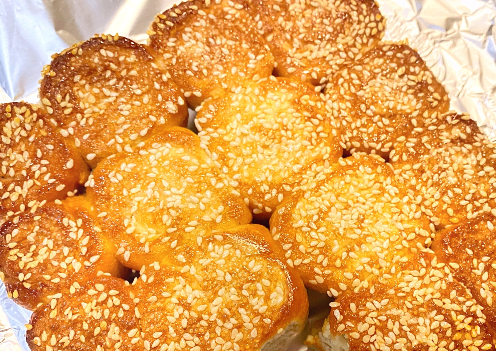
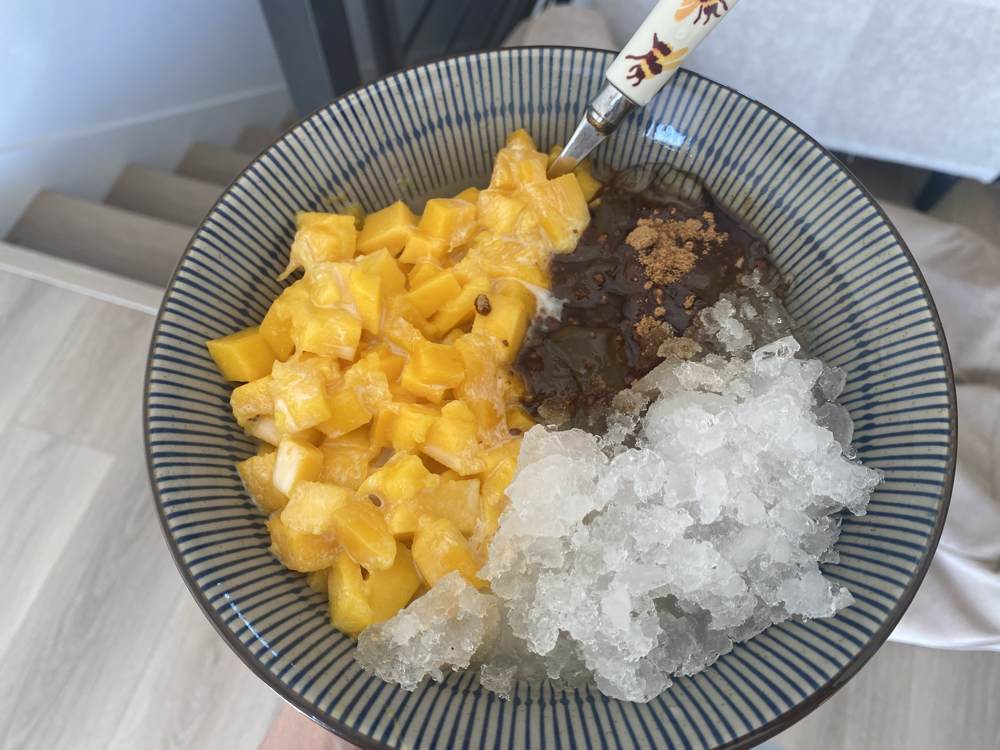

About
Hi there! I'm Jiani, a first-year graduate student at the University of Michigan School of Information, specializing in User Experience Research and User Interface Design. Welcome to my website! I built this space to share my daily thoughts, my cats, and interact with visitors. On this site, you can explore my artworks and photography in the About page, meet my cats on the Kittens page, and share your visit with me through the guestbook. Thanks again for visiting!
In my free time, I enjoy taking photos and painting.
Here are some of my works.


I also love cooking Chinese cuisine and desserts






